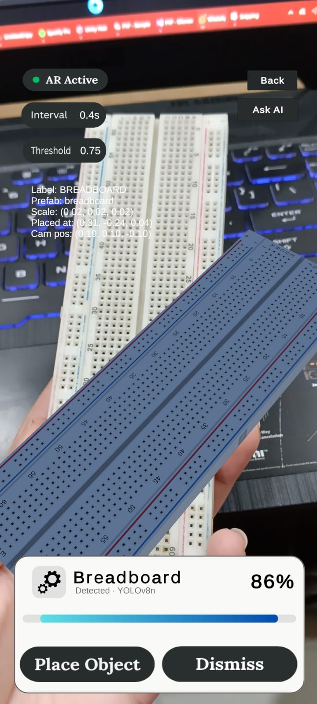
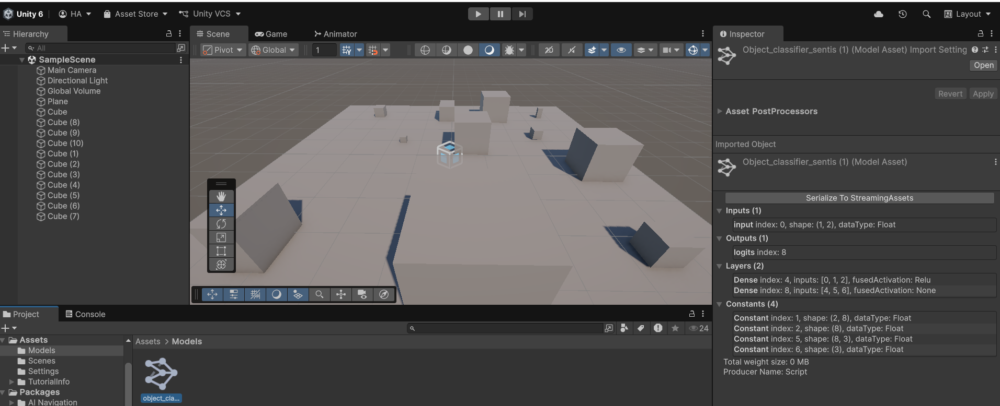
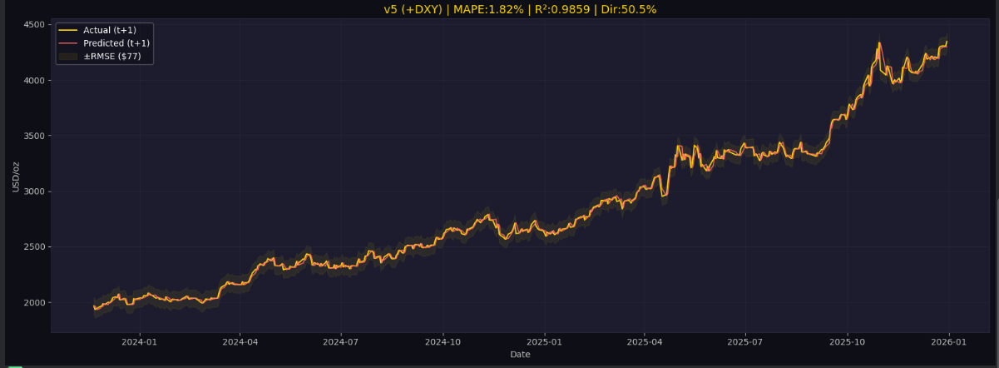

// AI & MACHINE LEARNING
ENGINEER
Hoorish
Ahmad
ML Engineer — deep learning, intelligent systems & AI-powered applications.
Final-year Computer Systems Engineering student at UET Peshawar (CGPA 3.70). I build end-to-end AI systems — from training models in PyTorch to deploying them inside real-time applications, games, and interactive experiences. Comfortable across the stack: deep learning, NLP, LLM integration, and on-device inference. Headed toward research-based graduate study in AI abroad.
Selected engineering work · 01–03
From trained weights to running product.
Three projects that carry a real model end-to-end — problem framing, architecture choices, and the engineering constraint that shaped them.
// Final Year Project · Computer Vision · Edge
Real-Time Object Recognition in AR
github.com/hoorishahmad · Unity · Python · ONNX · Unity Sentis · C#

Problem & Objective
Run object detection live on the device camera inside an AR scene and augment recognized objects on the fly — entirely offline, no inference server. Target: a usable real-time experience on a mid-range Android phone.
Architecture & Pipeline
Train in PyTorch → export to ONNX → load & run in-engine with Unity Sentis at runtime. Benchmarked four detector backbones to find the accuracy/latency sweet spot for a constrained device.
Metrics & Performance
Engineering Challenge
- Trading accuracy against latency across four architectures for a real-time, memory-limited target.
- Reconciling ONNX export quirks so models load and run correctly inside Sentis.
- Keeping detection stable as the AR camera pose and lighting shift frame to frame.
// On-Device Inference · Game AI · Classification
NPC AI Game Tool — Object Classifier
github.com/hoorishahmad/NPC-AI-Game-Tool · Unity · C# · ONNX · Sentis

Problem & Objective
Give an NPC a way to perceive its environment in real time — classify nearby objects from spatial features so behaviour can react to what's around it, all inside the running game with no external service.
Architecture & Pipeline
Train a neural network → export to ONNX → load into a live Unity scene via Sentis for in-engine inference. Extract spatial features (size, position, distance), normalize, classify each frame.
Metrics & Performance
Engineering Challenge
- Designing a feature vector compact enough for per-frame inference but expressive enough to separate classes.
- Normalizing spatial features so the model generalizes across scene scales.
- Zero-dependency deployment — everything runs in-engine, no round trip to a server.
// Deep Learning · Sequence Modeling · Transformers
Gold Price Forecasting with Self-Attention
github.com/hoorishahmad/Gold-Predictor · PyTorch · NumPy · Pandas

Problem & Objective
Forecast gold prices from historical series using a Transformer instead of the usual LSTM, to capture longer-range temporal dependencies through self-attention across time steps.
Architecture & Pipeline
From-scratch Transformer: positional encoding, multi-head attention, evaluated against baseline models. Built and trained in PyTorch with explicit train/validation separation.
Metrics & Performance
Engineering Challenge
- Verifying against data leakage — making sure future information never bleeds into training windows.
- Implementing attention and positional encoding from first principles rather than a high-level wrapper.
- Fair comparison against baselines under identical splits and preprocessing.
Supporting work
Archive
Browser text-RPG where an LLM plays Game Master — stays in character while emitting valid JSON each turn so the UI updates live. State entirely through prompt design.
JS · OpenRouter · Prompt Eng →Stealth game with an AI enemy system written from scratch — FoV detection, patrol/alert/chase state machine, full playable 3D build.
Unity · C# · Game AI →Full NLP pipeline from raw text to predictions — tokenization, stopword removal, vectorization, classifier training for 3-class sentiment.
Python · scikit-learn →Multi-layer ANN for digit recognition + regression ANN on California Housing — tuned architectures, loss curves, confusion matrices.
Python · scikit-learn · NumPy3D exploration game — player navigation, environment interaction, dynamic object spawning, game-state management.
Unity · C# →Multithreaded Sudoku solver (pthreads + mutex) and a socket-based multiplayer Tic-Tac-Toe server. Low-level concurrency & networking.
C · POSIX Threads · SocketsCapability matrix
Tech stack
Grouped by what it's for. Everything here is something I've actually shipped or trained with.
DL Deep Learning & CV
IO Inference & Deployment
LG Languages & Core Tools
GD Game / Interactive AI
→ Currently learning / roadmap
Research direction
Where I want to go deeper.
I'm most interested in AI that interacts with people through creative and immersive experiences — computer vision, intelligent agents, LLM-driven game systems, AIGC, and AR/VR. The intersection of technical depth and creative application is where I want to focus, both through the projects I'm building now and through graduate research abroad.
Relevant coursework
Get in touch
Let's build intelligent systems together.
Open to AI / ML roles and research collaboration. Based in Pakistan, working globally.
© 2026 Hoorish Ahmad · built from scratch · no templates harmed